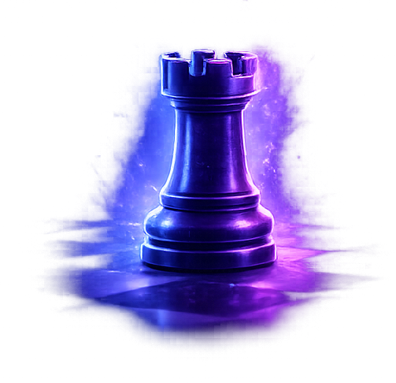

La puissance des lignes droites.

La tour est une pièce stratégique majeure, particulièrement forte dans les phases finales.
Elle se déplace en ligne droite : horizontalement ou verticalement, sur autant de cases que possible.
Les tours deviennent extrêmement puissantes sur les colonnes ouvertes. Doubler les tours sur une même colonne est une stratégie classique.
En fin de partie, la tour est souvent décisive pour soutenir un pion passé vers la promotion.